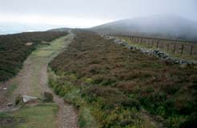

Llandegla to Bodfari
 We had asked Mike whether
he'd mind fixing us an early breakfast, because it was going to
be a long day. We ate at 7:30, and set off in the drizzle. We
stopped first to take a picture of their house, which we had
liked so much. Over the years, they've bought the five old
cottages which are all adjacent, and made them into one
(interesting) house.
We had asked Mike whether
he'd mind fixing us an early breakfast, because it was going to
be a long day. We ate at 7:30, and set off in the drizzle. We
stopped first to take a picture of their house, which we had
liked so much. Over the years, they've bought the five old
cottages which are all adjacent, and made them into one
(interesting) house.
This is the day of the moels, or bald hills, of the Clwydian
range. It was good walking: the hills weren't too steep, the
paths were good, and the ground was generally soft under our
feet. The rain wasn't a problem, as it was just off-and-on
drizzle. The only difficulty was the wind, which often seemed
like a gale. That made it hard walking at times. Moel Fammau is the best known of the
moels, because it's the highest of them, and it has the remains
of a tower on top. The tower was built to commemorate the 50th
year of George III's reign. It was never completed, however, and
most of it blew down. The rest fell down bit by bit. Now there's
just the rather massive base of the tower, but it's still a
landmark. By the time we got there, the hilltop was covered by a
cloud. We went ahead with our plan to eat lunch there, because we needed the
tower as a wind break. It was raining and the wind was fierce, so
this wasn't one of our more comfortable lunches! We had to use
the map and compass when we set out, since the path was almost
invisible in the cloud. But as we went down the hill, we came out
of the cloud, and the path was then easy to see.
Because it was cloudy, we didn't get the distant views that
the books mention, of Snowdon and of the Irish Sea, for example.
But we could see the attractive valley below us and the heather
around us and the hills in front of us, and it was all very
exhilarating. After we came down from the moors we were once
again in pretty farmland, walking on farm lanes. We were tired by
the end of the day from fighting the wind, and were glad to relax
and warm up in Mrs. Price's lounge. She had a comforting coal
fire in her fireplace, which we appreciated.